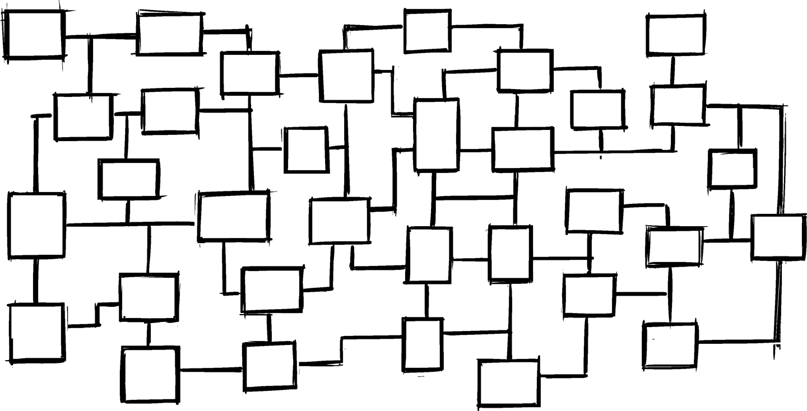
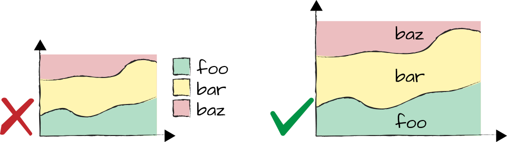
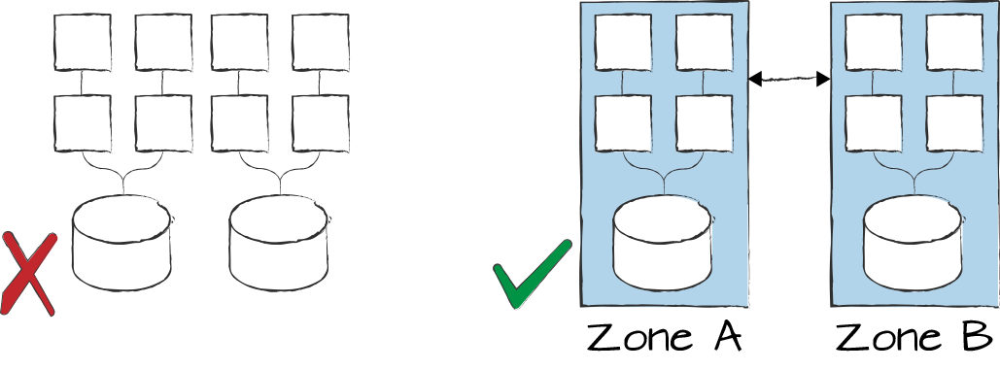
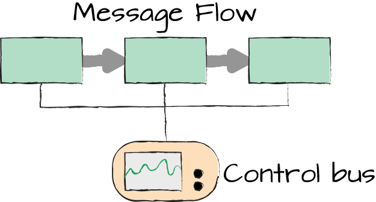
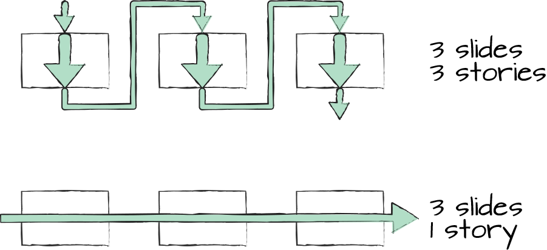

Show the Forest, Not the Trees

When sharing a diagram, you might receive feedback such as, “System ABC is missing.” Even though it’s well intentioned, completeness shouldn’t be your architecture diagrams’ primary goal. Rather, you should depict the appropriate scope. What’s the right scope? One that’s big enough to be meaningful, small enough to be comprehensible, and cohesive enough to make sense.
In large organizations, there’s a constant danger of being overcome by the sheer size and complexity of the environment. So, putting some blinders on is allowed, and in fact encouraged.
When discussing architecture diagrams, it’s good to remind ourselves why we draw them in the first place. Architecture diagrams are models of reality (Chapter 22). The most common model of reality we use in daily life is a map: maps help us decide where to go and how to get there. To do so, maps select a specific scope and emphasis. For example, a Chicago street map that shows only half of downtown would be awkward. However, including all of Lake Michigan wouldn’t be very useful, just like adding Springfield at the same scale. A map designer chooses conscious boundaries and a conscious level of detail based on the map’s intended purpose.
Models, whether maps or architecture diagrams, aren’t about being right or wrong. In fact, they’re all wrong (Chapter 6) because they aren’t reality. The opening paragraph of William Kent’s book Data and Reality1 aptly reminds us: “Rivers do not have dotted lines in them and freeways are not painted red.”
Instead of trying to make models right, you should think about whether your models are useful. To answer that question, though, you need to first know what the model’s use, or purpose, is. For a model to be useful, it needs to help you answer a question or make a better decision. Otherwise, your diagram is just art, and having looked at thousands of architecture diagrams, my impression is that most architects aren’t particularly gifted artists.
So, before setting out to draw a specific diagram or design a presentation slide, you must first decide which questions you are looking to answer. A broad “lay of the land” might be needed to build your world map (Chapter 16), but it isn’t very useful as an architecture diagram. Think of it this way: a travel bureau will show you beaches and palm trees, not a map of the whole continent.
All models are wrong, but some are useful. To know which ones, you must first know which question you’re trying to answer.
When deciding on a diagram’s scope and boundaries, I am not always able to do so a priori. Sometimes, I need to have the diagram in front of my eyes to decide whether I prefer to split it into two. I therefore almost always work iteratively.
Architecture diagrams or slides are designed to get a specific point across and therefore must place a clear emphasis. This distinguishes them from reference books or manuals, which aim to be comprehensive. Still, too many slides I see try to give the big picture as the best possible approximation of reality without knowing which part is actually worth looking at.
When faced with overly “noisy” slides, I tend to apply a strict but useful five-second rule, which isn’t related to food safety:2
I show the audience a slide for a mere five seconds and ask them to describe what they saw. In most cases, the responses boil down to a few words from the headline and statements like “two yellow boxes and one blue barrel below.” If you are aiming to convey a shared database pattern, you likely succeeded, but most authors will be disappointed to hear such a dramatic simplification of their precious content.
Slides that don’t pass this test are likely to confuse the audience when first shown: viewers’ eyes will chase across the visuals, trying to discern what’s important and what’s the meaning of it all. During that time your audience isn’t listening to you explaining the content because they’re busy with the visuals. Of course, you will show the actual slide for more than five seconds, but first impressions count—for every slide you show.
A useful presentation technique is to verbally introduce the concept of the next slide before actually showing it. The audience is more likely to listen because they’re aren’t distracted by the new visual and you’re building up a bit of suspense. Naturally, this requires you to know which slide comes next rather than use the slides as a reminder what to talk about.
Some organizations create slides that try to act like documents, meaning they are also meant to be read as handouts. The resulting slideument, a term coined by Garr Reynolds,3 is rarely a useful presentation and never passes the five-second test because there’s way too much content on a slide. Sadly, most of them don’t make a meaningful document either because it usually lacks a clear structure and storyline. Interestingly, Martin Fowler realized that there’s a use case for documents created in a presentation tool, for which he’s coined the term Infodecks.4 Nancy Duarte shows a similar approach with SlideDocs.5 Both can be a useful communication medium when being read as opposed to being projected.
I participate in many architecture reviews and decision boards. While such boards often exist due to an undesirable separation of decision makers and knowledge holders (Chapter 1), many large enterprises depend on them to harmonize their technical landscape and to gain an overview across many functional silos. The topics for these meetings can be fairly technical in nature, making me skeptical whether the audience is truly following along.
A presentation pop quiz consists of blanking the presentation and having a member of the audience explain what they saw and understood. It’s a test for the presenter, not the audience.
To test whether the decision body understands what they are deciding, I inject a pop quiz6 into the presentation by telling the presenter to pause and blank the slide (hitting “B” will do this in PowerPoint) and asking who among the audience would like to recap what was said up to this point in their own words. Sadly, this exercise is more likely to trigger nervous laughter, frantic staring at the floor, and sudden checking of incoming emails as opposed to a good summary. As a result, I might ask the presenter to briefly recap the key points for everyone’s benefit. It’s also useful to highlight to the audience that this is a test for the presenter, not for them.
I don’t exclude myself from the pop quiz. When replaying what the speaker said, I often intentionally use very simple language to make sure I really capture the essence.
In a presentation about network security architecture in the untrusted network zone, after watching a handful of rather busy slides, I summarized the speaker’s statement as follows: “What worries you is the black line going all the way from top to bottom?” His resounding “yes” confirmed both that I had correctly summarized the issue and that the presenter took away an insight into how to better communicate this very aspect.
This technique might seem overly simplistic at first, but it validates that there is a solid connection between the model being presented (such as vertical lines depicting legal network paths from the internet to the trusted network) and the problem statement (direct paths pose a security risk). Removing all noise and reducing the statement down to the “black line” sharpens the message.
If I had to name the number-one enemy of useful architecture diagrams, it would likely be Visio’s default 10-point font size and skimpy line width, augmented by poor user judgment regarding component placement. It’s really in the same league as PowerPoint’s autosize feature that gives people an endless supply of bullet points to neutralize their audience. True, the tool isn’t solely responsible, but Visio’s default settings, which are tuned for detailed engineering schematics, lure the user into creating visuals that are unsuitable for projecting something evocative on the wall.
My advice for creating diagrams that can convey a clear message without dumbing down the content therefore starts with the following basic techniques.
Text that isn’t readable isn’t adding value, so avoid ant fonts7 unless you consider “I know you can’t read this” an engaging introduction into a slide. Using sans-serif fonts of decent size and good color contrast will be appreciated in any presentation. I can’t count the number of times I see slides that contain tiny fonts but consist of 50% empty space that could have been used for larger boxes and larger fonts, similar to Figure 21-1. Architecture diagrams aren’t the place for minimalism—go bold.
Most tools allow you to set defaults for line width and font sizes. Use them. Also, periodically zoom down the diagram on your screen to 25% to see what’s still readable.
Differences in elements that don’t have meaning are nothing but distractions. Therefore, reduce visual noise; for example, by properly aligning elements and using a consistent form and shape (see Figure 21-2). It’s also good to be careful with too much decoration, such as rounded corners, shadows, and so on—they can distract from the core message you’re trying to convey. If things look different, make sure that this expresses meaning, as detailed in Chapter 23.
Great advice on placement, visual layout, and emphasis can be found in Nancy Duarte’s book slide:ology.8
One of the my most frequent maneuvers in presentation tools is to increase the size of arrowheads. If you use directed arrows to express semantics (Chapter 23), you’re going to want them to be easily recognizable, as depicted in Figure 21-3. If direction isn’t critical to understanding the diagram, omit the arrowheads to reduce noise.
If your tool won’t cooperate, place a triangle over the line; never let the tool be an excuse for poor diagrams. It’s like the cook coming out of the kitchen and telling you that your meal isn’t tasty because the farmer didn’t grow tasty tomatoes. You’re unlikely to be extraordinarily sympathetic.
Although they’re a standard feature in scientific circles and charts exported from Excel, a visual legend requires a viewer to correlate patterns or colors in a diagram with explanatory labels below or next to it. Having the label where the data is located is much easier to digest, as shown in Figure 21-4.

Therefore, use legends only when absolutely unavoidable. Most of the time you can remove clutter or increase the size of boxes to put the labels where they belong. I have redrawn stacked bar graphs exported from Excel export to have better control over sizing and labeling. The investment of a mere five minutes saved a room full of executives much time and effort in reading the data.
As we already learned, a good document reads like watching the movie Shrek (Chapter 20). The same is true for diagrams, which might be required to illustrate complex interrelationships that lead to a particular system behavior (Chapter 10). They should nevertheless pass the five-second test by having a clear high-level structure that is visible first, augmented by additional detail that reveals itself later and doesn’t interfere with the big picture. Figure 21-5 first reveals that the system consists of two identical zones, after which you can “zoom in” to see how each zone is internally composed.

I occasionally use a build slide or incremental reveal for this purpose, acknowledging that there are strong opinions for and against such visual effects. I find build slides to work well as they give the viewer time to understand each element before adding the next batch. For this to work, let the new elements simply appear, avoiding any temptation to select one of those amazing spiral-twist-fade-rotate reveals.
If you layer a diagram perfectly, the visuals will reveal themselves incrementally. If you can’t quite get there every time, incremental build slides are a reasonable substitute.
Most architects will develop their own visual style over time and can use it as a valuable branding tool. Many of my technical papers and diagrams are easily recognizable—for example, when sitting on someone’s desk—thanks to a consistent set of colors and a bold, almost cartoon-like style that favors large lettering over subtle aesthetics.
My diagrams virtually always have lines (Chapter 23), but I keep the lines’ semantics to two or at most three concepts. Each type of relationship that I depict with lines should be intuitive. For example, I might depict a data flow with broad, gray arrows, whereas control flow is shown in thin, black lines, as illustrated in Figure 21-6, which depicts the Control Bus pattern from Enterprise Integration Patterns.9

The line width suggests that a large amount of data flows through the system’s data flow while the control flow is much smaller but significant. The best visual style, borrowed from advice on writing, is the one “that keeps solely in view the thought one wants to convey.”10
When preparing a slide or a document paragraph, the title sets the tone for a clear and focused statement. For most circumstances, I prefer titles that are full sentences because the title alone tells the essence of the story. Using this approach also assures that each slide or paragraph focuses on a single main statement.
I make an exception for keynote presentations to a large and diverse audience for which I use titles consisting of single words or short phrases like the Architect Elevator (Chapter 1). Such short titles mesh well with simple visuals that are truly a visual aid to me, the speaker, to draw the audience’s attention and help them memorize the content via a visual metaphor.
For technical presentations that are prepared for a review or decision-making session, however, I prefer clear statements, with which one can either agree or disagree. These statements are much better represented as full sentences, akin to the story-telling headings (Chapter 20) in documents for busy people. In such cases, “Stateless services and automation support elastic scale-out” is a better title than “Server Architecture.”
What you certainly want to avoid are verbose phrases or crippled sentences that confuse the reader but don’t make any form of statement: “Server infrastructure and application architecture overview diagram (abstracted for simplicity’s sake).” Trust me, I’ve seen even worse.
When structuring presentations, I realize that too many technical presentations tell one story per slide. While it’s good to focus on one message per slide, the sequence of messages needs to form a cohesive story, as demonstrated in the bottom half of Figure 21-7. Interestingly, you can test this easily using PowerPoint’s Outline View, which shows all slide headings in a sidebar.

Creating this cohesion not only makes a single story line for a more logical flow, it also drastically shortens the time to needed to present. If each slide tells a new story, the speaker will easily spend half a minute looking at and introducing each slide. Multiply this by the typical 20 to 30 slides in a presentation, and you’ll find that having a connected storyline can save you up 15 minutes. So, when someone worries that they don’t have enough time for their content, I advise them to make sure that they have a single story.
For a good collection of slide decks that tell a story, I recommend a visit to https://speakerdeck.com.
1 William Kent, Data and Reality: A Timeless Perspective on Perceiving and Managing Information in Our Imprecise World, 3rd ed. (Westfield, NJ: Technics Publications, LLC, 2012).
2 Wikipedia, “Five-Second Rule,” https://oreil.ly/1Z397.
3 Garr Reynolds, "Slideuments and the Catch-22 for Conference Speakers,” Presentation Zen (blog), April 5, 2006, https://oreil.ly/yw45r.
4 Martin Fowler, “Infodeck,” MartinFowler.com, Nov. 16, 2012, https://oreil.ly/yvgTq.
5 Nancy Duarte, “PowerPoint Presentations vs. Slidedocs,” Duarte.com, https://oreil.ly/MjKny.
6 A pop quiz is a short test given by a teacher in class without prior announcement. It goes without saying that this is fairly unpopular with students.
7 Neal Ford, Matthew McCullough, and Nathaniel Schutta, Presentation Patterns: Techniques for Crafting Better Presentations (Boston: Addison-Wesley Professional, 2012).
8 Nancy Duarte, slide:ology: The Art and Science of Creating Great Presentations (Sebastopol, CA: O’Reilly Media, 2008).
9 Hohpe and Woolf, Enterprise Integration Patterns.
10 Barzun, Simple & Direct.